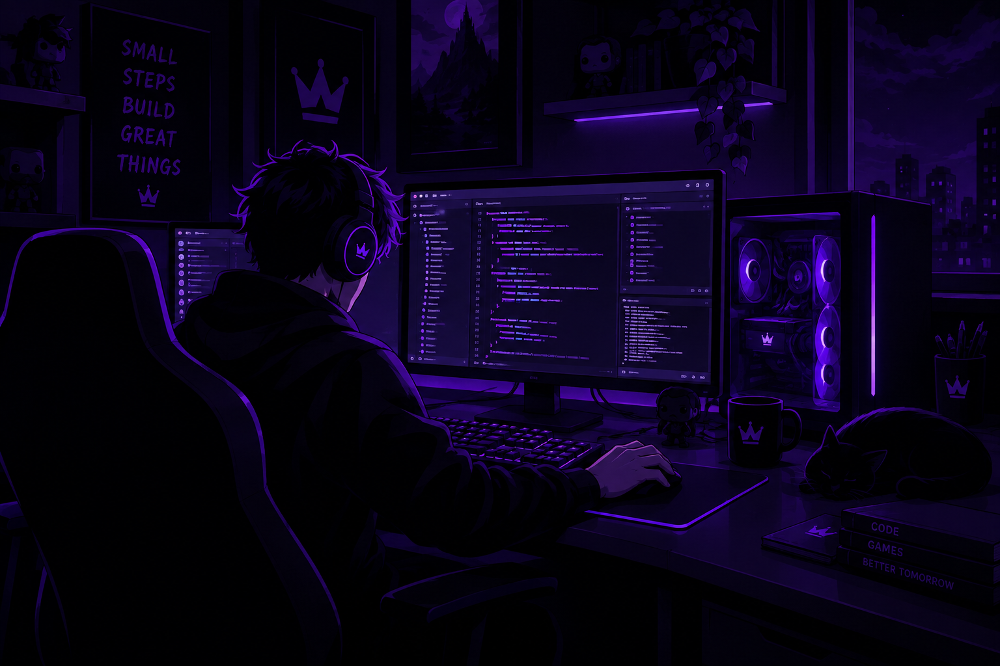
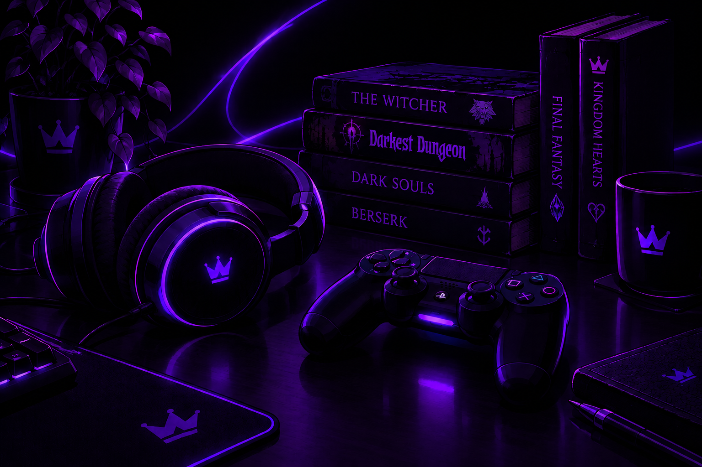
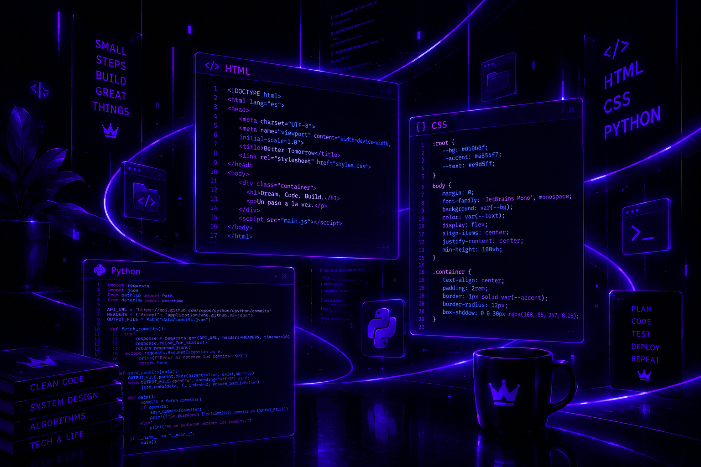
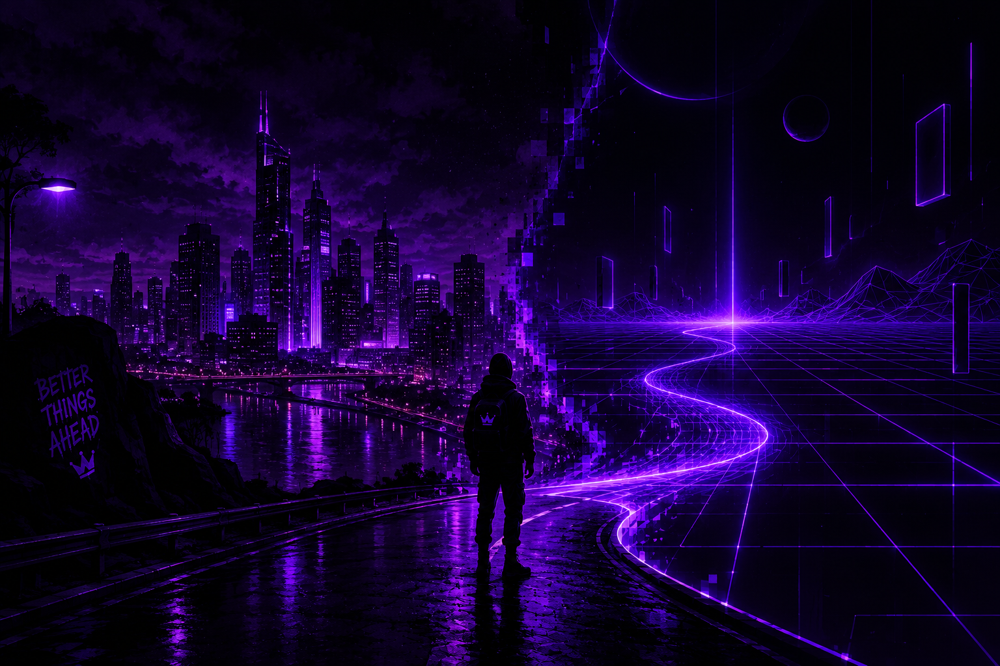
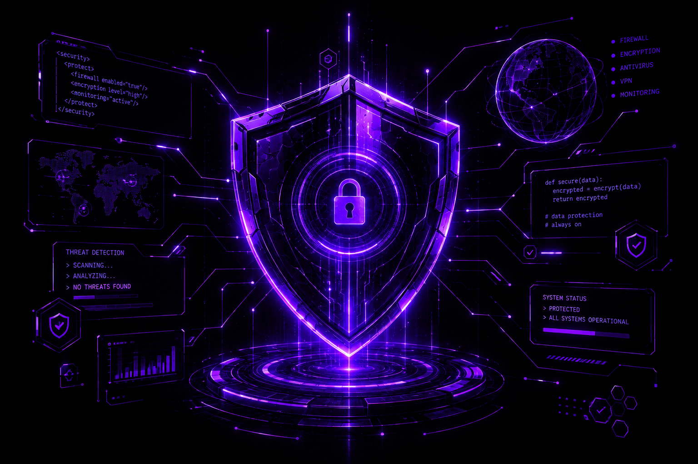

Quién soy

Soy Emiliano soy de España y he trabajado de varias cosas pero queria dedicarme a la programación. Soy una persona muy impaciente conmigo mismo e intento que todo lo que haga salga a la perfección. Siempre me ha interesado la programación y me ha parecido un buen curso para iniciarme en ella. Me gustaria dedicarme a programar codigos y también en parte al diseño web.
Mis aficiones

En mi tiempo libre me gusta jugar videojuegos, leer y realizar partidas de rol. Me gusta mucho la música y me gusta escucharla mientras hago otras cosas. Siempre que estoy concentrado en algo me gusta escuchar música de fondo, ya que me ayuda a concentrarme. De vez en cuando hago directos en Twitch, aunque no soy muy constante con ello. Pero me gustaria hacerlo más a menudo.
Mis estudios

He estudiado Informática y Telecomunicaciones en el CEPA de Getafe. Aparte, por mi propia cuenta he profundizado en el aprendizaje de desarrollo web. Mi interés por la tecnología me ha llevado a practicar de forma autodidacta durante mucho tiempo. Gracias a esta combinación de formación y práctica, he aprendido a programar en lenguajes como Python y JavaScript. También he estudiado diseño de páginas web utilizando HTML y CSS.
Mi historia hasta aquí

Después de acabar el curso empecé a formarme por cuenta propia y a buscar empleo. Acabé trabajando en hostelería en bares y en un hotel. Fui a Sevilla un año porque tuve una oportunidad allí, aunque acabé volviendo a Madrid por distintas circunstancias. Me gusta pensar que el viaje y la experiencia laboral me dieron más capacidades y un mejor entendimiento del mundo laboral fuera de la programación.
Mi visión de futuro

Me gustaría poner a prueba mis habilidades en el ambito de la programación en alguna empresa. También quiero seguir aprendiendo nuevos softwares de programación para aumentar mis habilidades en este entorno. Mas adelante me interesaría aprender ciberseguridad ya que es un tema interesante para mi. Mi objetivo final es combinar el diseño funcional con sistemas seguros.